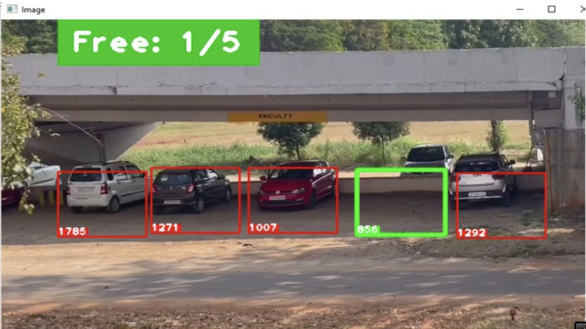
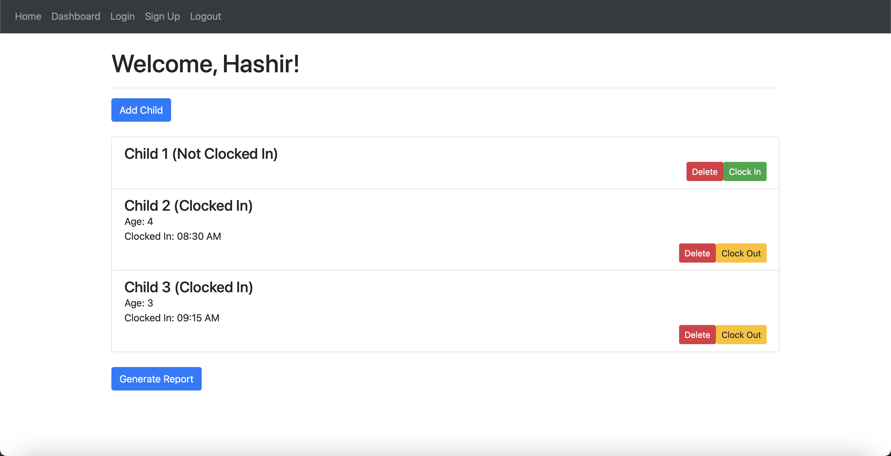
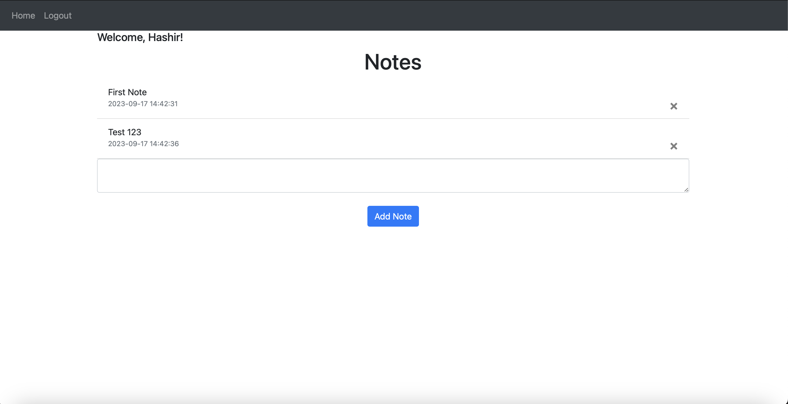

Parksense is an ongoing project that combines Python, OpenCV, and Raspberry Pi to create a smart
car parking detection system. Using Raspberry Pi as the hardware platform, it captures real-time parking area data and employs computer
vision techniques for accurate car detection and dynamic parking status updates.


Tiny Tracker is a web application designed to simplify time sheet management for childcare providers.
It was developed using Python, Flask, SQLite, SQLAlchemy, HTML, CSS (Bootstrap), and limited JavaScript.
The project features include clocking in and out, adding and deleting children, and generating monthly reports.

Noteify is a Flask-based web application designed for efficient note-taking and organization.
It features user authentication for secure access and personalized experiences.
The user-friendly front-end is built using HTML, CSS (Bootstrap), and JavaScript, while data management
is powered by SQLite and SQLAlchemy integration.